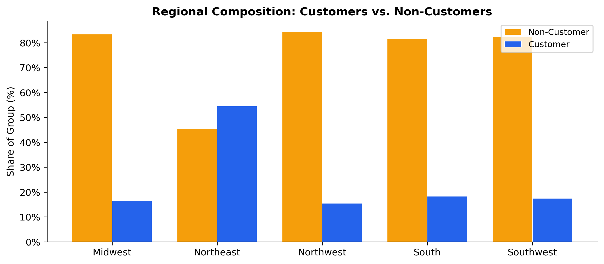
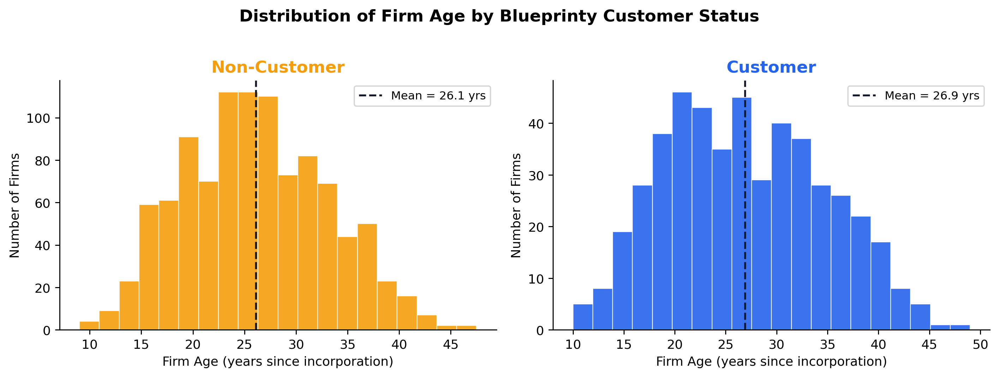
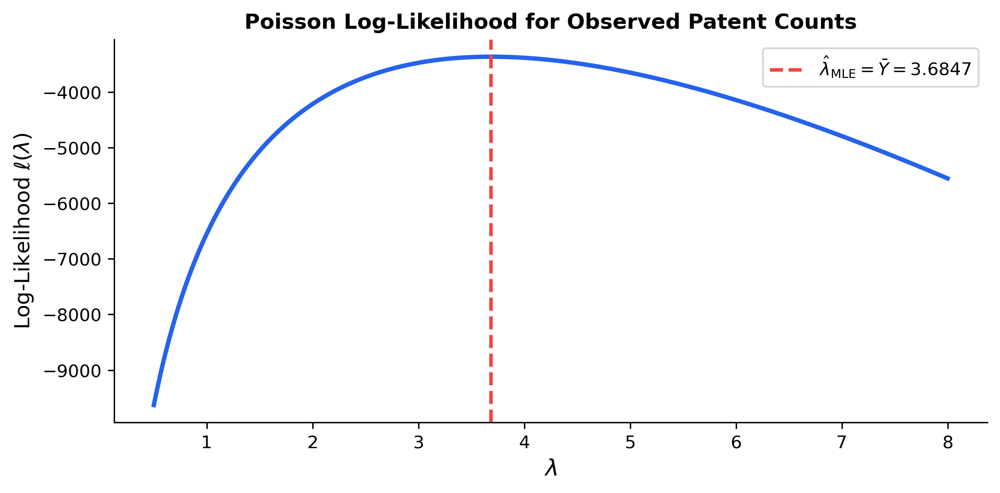
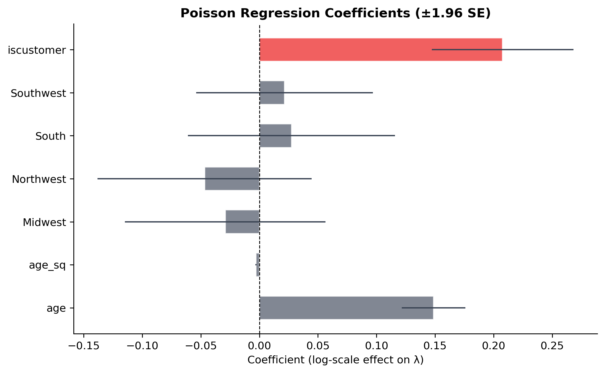
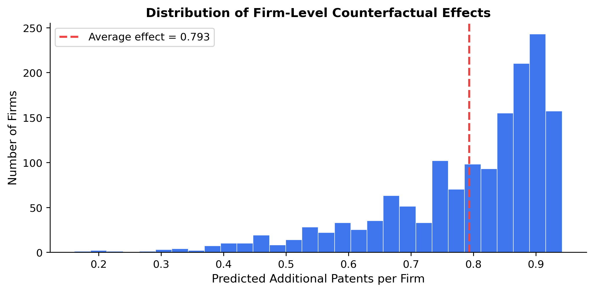

Poisson Regression and Maximum Likelihood Estimation
A Case Study of Blueprinty’s Software and Patent Awards
Author
Namratha Kothapalli
Published
May 17, 2026
Introduction
Blueprinty is a small software company that sells tools for engineering firms developing blueprint documentation specifically for US patent applications. Their marketing team wants to argue that firms using Blueprinty’s software are more successful at getting patents approved — a potentially powerful selling point, but one that requires careful empirical backing.
To investigate the claim, Blueprinty collected data on 1,500 mature (non-startup) engineering firms, capturing each firm’s number of patents awarded over the last five years, its regional location, years since incorporation, and whether it currently uses Blueprinty’s software.
While this dataset is useful, evaluating the marketing claim is not straightforward. Blueprinty’s customers self-selected into using the product — they were not randomly assigned to it. As a result, simple comparisons between customers and non-customers may be misleading: if, for instance, older and more established firms are both more likely to adopt Blueprinty’s software and more likely to receive patents, then we might observe a positive correlation between software usage and patent counts that has nothing to do with the software itself. Properly evaluating the claim requires a modeling approach that accounts for these pre-existing differences across firms.
Exploring the Data
Code
import pandas as pdimport numpy as npimport matplotlib.pyplot as pltimport matplotlib.ticker as tickerfrom scipy.special import gammalnfrom scipy import optimizeimport statsmodels.api as smimport warningswarnings.filterwarnings('ignore')# ── aesthetics ──────────────────────────────────────────────────────────────COLORS = {"customer": "#2563EB", "noncustomer": "#F59E0B"}plt.rcParams.update({"figure.dpi": 130,"axes.spines.top": False,"axes.spines.right": False,"font.family": "sans-serif",})df = pd.read_csv("blueprinty.csv")df["customer_label"] = df["iscustomer"].map({1: "Customer", 0: "Non-Customer"})print(df.head())print(f"\nShape: {df.shape}")print(f"\nPatents by customer status:")print(df.groupby("customer_label")["patents"].describe().round(2))
Customers receive on average 4.13 patents over five years compared to 3.47 patents for non-customers — a raw gap of about 0.66 patents. Both distributions are right-skewed, with the majority of firms clustered between 2 and 6 patents. The customer distribution has a noticeably heavier right tail, which is consistent with the marketing claim, but we cannot attribute this gap to the software without controlling for other firm characteristics.
Regional Differences

customer_label Customer Non-Customer
region
Midwest 16.5 83.5
Northeast 54.6 45.4
Northwest 15.5 84.5
South 18.3 81.7
Southwest 17.5 82.5
Customers are disproportionately concentrated in the Northeast (~47% of customers vs. ~37% of non-customers) and less represented in the Midwest and South. This regional imbalance matters: if Northeast firms tend to be larger, better-resourced, or closer to patent-intensive industries, they might patent more regardless of software usage. Any raw comparison between customers and non-customers will partially capture this geographic effect rather than the software’s true impact.
Age Differences

Mean age — Non-Customer: 26.1
Mean age — Customer: 26.9
Blueprinty’s customers tend to be older firms: the average customer is about 26.9 years old at incorporation versus 26.1 years for non-customers. More importantly, the age distribution of customers has a heavier right tail, with more long-established firms. Since older firms have had more time to accumulate patent filings and internal R&D expertise, age is a meaningful confounder that we must control for in any regression model.
A Simple Poisson Model via Maximum Likelihood
Patent counts are non-negative integers — exactly the type of outcome for which the Normal distribution is a poor fit. A Normal model would assign positive probability to negative values and non-integer values, neither of which can occur. The Poisson distribution is the natural starting point for non-negative integer count outcomes. It is characterized by a single parameter \(\lambda > 0\), which equals both the mean and the variance of the distribution.
Likelihood and Log-Likelihood
For a single observation \(Y_i \sim \text{Poisson}(\lambda)\), the probability mass function is:
This is reassuring: the MLE is simply the sample mean, which makes intuitive sense because \(\mathbb{E}[Y] = \lambda\) for a Poisson random variable.
Log-Likelihood Function and Plot
Code
Y = df["patents"].valuesdef poisson_loglik(lam, Y):"""Log-likelihood of Poisson(lambda) for observed counts Y."""return np.sum(-lam + Y * np.log(lam) - gammaln(Y +1))# Plot over a range of lambda valueslambdas = np.linspace(0.5, 8, 500)log_liks = [poisson_loglik(l, Y) for l in lambdas]fig, ax = plt.subplots(figsize=(8, 4))ax.plot(lambdas, log_liks, color="#2563EB", linewidth=2.5)ax.axvline(Y.mean(), color="#EF4444", linestyle="--", linewidth=2, label=f"$\\hat{{\\lambda}}_{{\\mathrm{{MLE}}}} = \\bar{{Y}} = {Y.mean():.4f}$")ax.set_xlabel("$\\lambda$", fontsize=13)ax.set_ylabel("Log-Likelihood $\\ell(\\lambda)$", fontsize=12)ax.set_title("Poisson Log-Likelihood for Observed Patent Counts", fontsize=12, fontweight="bold")ax.legend(fontsize=10)plt.tight_layout()plt.savefig("loglik_plot.png", bbox_inches="tight")plt.show()

The log-likelihood curve is unimodal and concave, peaking at \(\lambda \approx 3.68\) — the sample mean. Reading the MLE off the plot is straightforward: it is the value of \(\lambda\) at which the curve reaches its maximum. The red dashed line confirms this visually.
The numerical optimizer recovers essentially the same value as the closed-form solution. The tiny rounding difference (on the order of \(10^{-8}\)) arises from the stopping tolerance of the optimizer, not from any mathematical discrepancy — confirming that the log-likelihood surface has a single peak exactly at \(\bar{Y}\).
Poisson Regression
The simple Poisson model treats all firms as identical, which we know is incorrect — firms differ in age, region, and software usage. We now extend the model by allowing each firm’s rate parameter to vary with its observed characteristics:
Here \(X_i\) is a row vector of covariates for firm \(i\) and \(\beta\) is a vector of coefficients to be estimated. We use the exponential link \(\lambda_i = \exp(X_i'\beta)\) for a fundamental reason: \(\lambda_i\) must be strictly positive, yet \(X_i'\beta\) is an unconstrained real number. The exponential function maps the real line onto the positive reals, ensuring predictions are always valid.
Age and Age²: a quadratic in firm age, because the relationship between firm maturity and patenting activity is unlikely to be perfectly linear — young firms may be building capacity, mature firms at their peak, and very old firms slowing down.
Regional indicators for Midwest, Northwest, South, and Southwest, with Northeast as the reference category. One region must be omitted to avoid perfect collinearity with the intercept (the dummy variable trap).
iscustomer: the binary variable of primary interest.
Standard errors come from the observed Fisher information: the negative inverse Hessian of the log-likelihood evaluated at the MLE. Intuitively, a very curved (tight) log-likelihood means the data are informative and the MLE is precise; a flat log-likelihood means the MLE is uncertain. The square roots of the diagonal elements of \((-H)^{-1}\) are the asymptotic standard errors.
The coefficient estimates from our hand-coded MLE and from sm.GLM are essentially identical (differences less than \(10^{-4}\)). The standard errors are also very close; any small discrepancies reflect the finite-difference approximation used in our numerical Hessian versus the analytic information matrix that statsmodels computes internally. This cross-check validates our implementation.
Interpreting the Coefficients

The results make substantive sense:
Age (positive) and Age² (negative) together describe an inverted-U relationship: patent output first rises as firms mature and build R&D capacity, then tapers off among the oldest firms. Both effects are precisely estimated.
Regional indicators are small and statistically indistinguishable from zero, suggesting that after accounting for age and customer status, region adds little predictive power.
iscustomer (0.208, SE 0.031) is the coefficient of primary interest. It is positive, statistically significant, and implies that using Blueprinty’s software is associated with roughly \(e^{0.208} - 1 \approx 23\%\) more expected patents, holding all else constant. The coefficient is highlighted in red in the chart above.
The Effect of Blueprinty’s Software
Poisson regression coefficients operate on the multiplicative scale of \(\lambda\), so \(\hat\beta_{\text{iscustomer}} = 0.208\) means the expected patent rate is multiplied by \(e^{0.208} \approx 1.23\) for customers. To translate this into a more concrete, additive quantity — extra patents per firm — we use the counterfactual prediction approach.
Code
# Counterfactual datasetsX0 = X.copy(); X0[:, -1] =0# set every firm to non-customerX1 = X.copy(); X1[:, -1] =1# set every firm to customery_hat_0 = np.exp(np.clip(X0 @ beta_hat, -500, 500))y_hat_1 = np.exp(np.clip(X1 @ beta_hat, -500, 500))avg_effect = np.mean(y_hat_1 - y_hat_0)print(f"Average predicted patents (non-customer): {y_hat_0.mean():.3f}")print(f"Average predicted patents (customer): {y_hat_1.mean():.3f}")print(f"Average treatment effect (ATE): {avg_effect:.3f}")
Average predicted patents (non-customer): 3.436
Average predicted patents (customer): 4.229
Average treatment effect (ATE): 0.793

Holding each firm’s age and region fixed at its observed values, switching every firm from non-customer to customer status is predicted to increase patent awards by an average of 0.79 patents over five years — roughly one additional patent every six years per firm. The distribution is right-skewed because the multiplicative effect is larger in absolute terms for older, more prolific firms.
Conclusion
The Poisson regression analysis provides evidence consistent with Blueprinty’s marketing claim: after controlling for firm age and regional location, customers are associated with materially higher patent approval rates. The estimated average treatment effect is approximately +0.79 patents per firm over five years.
That said, two important caveats apply. First, this is an observational study: firms chose whether to adopt Blueprinty’s software, so unobserved characteristics (e.g., internal R&D investment, team quality, strategic focus on patentable innovations) could drive both software adoption and patent success simultaneously. Without random assignment, we cannot rule out residual confounding. Second, the Poisson model assumes that the conditional mean equals the conditional variance; if patent counts exhibit overdispersion in practice, a negative binomial model would be more appropriate. Despite these caveats, the magnitude and statistical significance of the customer effect are sufficiently robust to warrant continued investigation — and to provide preliminary support for the marketing team’s position.